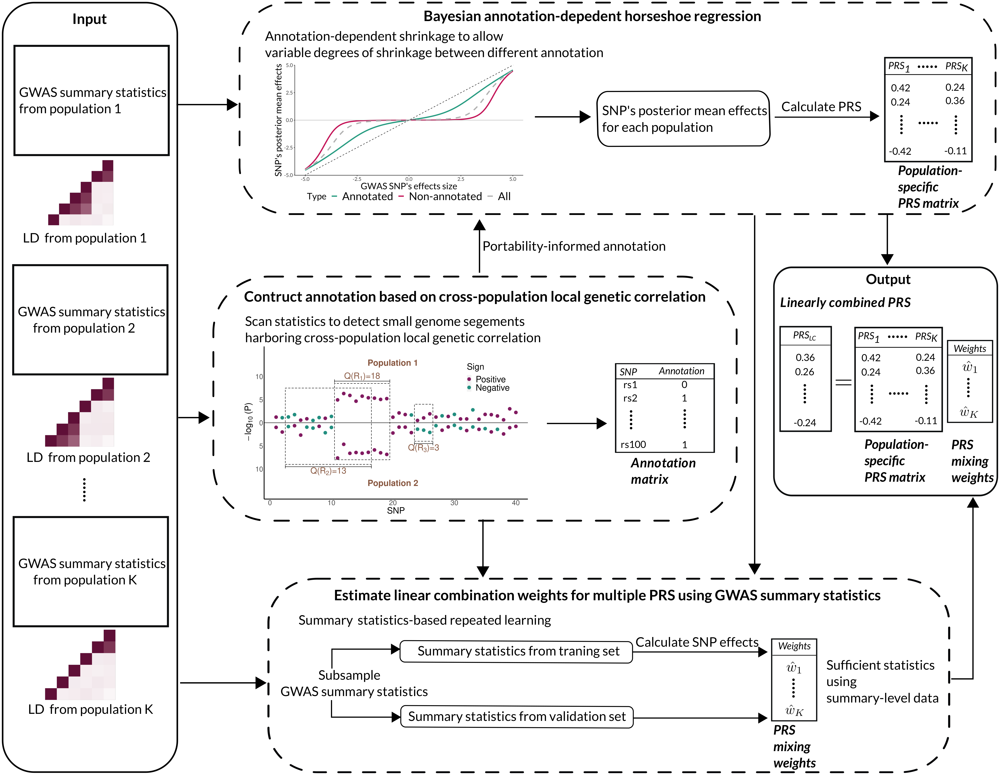
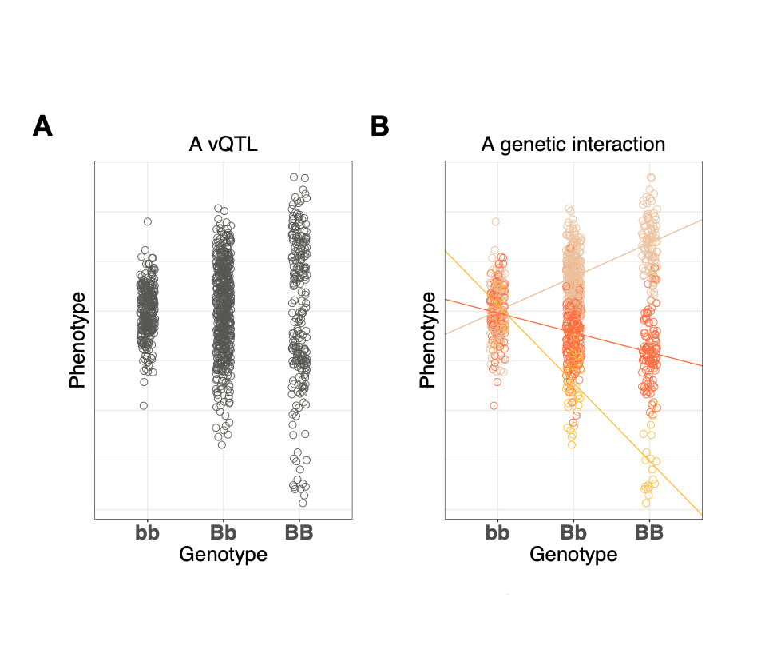
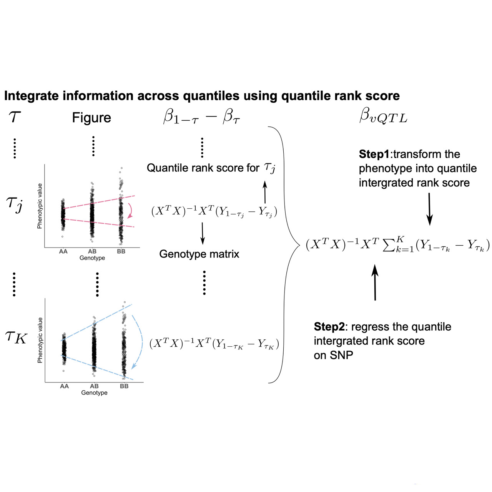
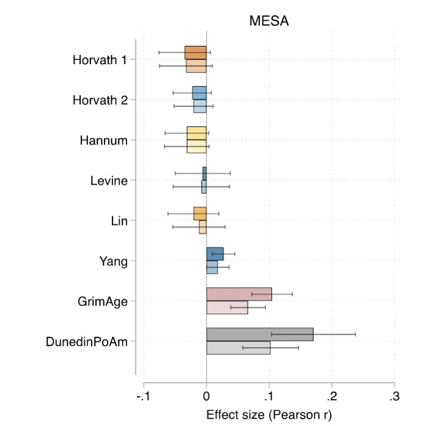
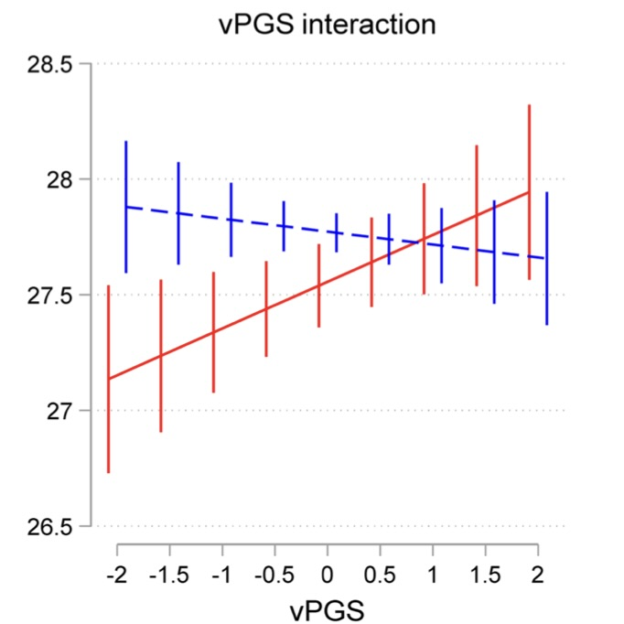

|
I'm a second-year Ph.D. student in Biomedical Data Science at UW-Madison, where I am very fortunate to work with Prof. Qiongshi Lu. and Prof. Lauren Schmitz. I got my B.S. in Statistics from Nanjing University in 2019. |
|
|
My research interests lie in statistical genetics, population genetics and Bayesian methods. Currently, I am working on developing generic tools for statistical genetics especially gene-environment interactions. Below are my publications: |
|  |
[5]
Miao J.*, Guo H.*, Song G., Zhao Z., Hou L.†, Lu Q.† (2022). Submitted. (preprint available on bioRxiv) Preprint / Software We propose a cross-population genetic risk prediction framework that (1) quantifies cross-population local genetic correlation (2) incorporates it as an annotation into a Bayesian framework which amplifies correlated SNP effects between populations through annotation-dependent statistical shrinkage (3) combines multiple population-specific PRS to further improve prediction accuracy while using GWAS summary data alone as input. |
|  |
[4] Miao J., Lu Q. (2022). Handbook of Statistical Bioinformatics (2nd Edition). Springer, in press. (Book Chapter)
|
|  |
[3]
Miao J., Lin Y., Wu Y., Zheng B., Schmitz L., Fletcher J., Lu Q. (2021). Submitted. (preprint available on bioRxiv) Preprint / Software
- Winner of Reviews's Choice Award from American Society of Human Genetics Meeting (ASHG) Meeting 2021. We propose a unified statistical framework for estimating genetic effects on the variability of quantitative traits that (1) constructs a quantile integral phenotype which aggregates information from all quantile levels, and only requires fitting two linear regressions per SNP in genome-wide analysis. (2) addresses some limitations of current vQTL methods, including a lack of robustness to non-Gaussian phenotypes and confounding effects on both trait levels and trait variability. |
|  |
[2]
Schmitz L., Zhao W., Ratliff S., Goodwin J., Miao J., Lu Q., Guo X., Taylor K., Ding J., Liu Y., Levine M., Smith J. (2021). Epigenetics Journal / Preprint
|
|  |
[1]
Schmitz L., Goodwin J., Miao J., Lu Q., Conley D. (2021). Scientific Reports Journal / Preprint
|
|
- Distinguished Student Paper Award from American Statistical Association (ASA) Section on Statistical Genomics and Genetics, 2022 [WiscBMI News] - Reviews's Choice Award from American Society of Human Genetics Meeting (ASHG), 2021 |
|
- X-Wing for improving genetic risk prediction in ancestrally diverse populations. - QUAIL for estimating genetic effects on the variance of quantitative traits. - SGEGG for fitting the linear mixed model to identify genome-wide gene-environment or gene-gene interactions for repeated measures. |
|
Reviewer - Behaviour Genetics, BMC Genomics Mentor - Gefei Song, Undergraduate Researcher at UW-Madison '22 |
|
This guy makes a nice webpage. |